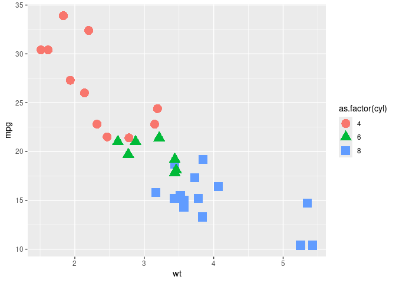
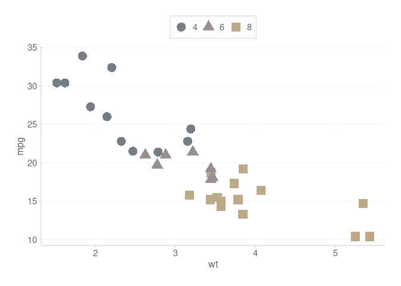

Overview
- Brand in
ggplot2- Package that streamlines color palette usage, initially adapted from the Tableau 10 Palette
- See colorblind statistics for the fill palette and the color (line) palette
- PLEASE SEE THE PACKAGE VIGNETTE FOR MORE DETAILED EXAMPLES
Installation of Package
You can install the development version of styles from GitHub with:
# Install devtools if not installed (for GitHub Package)
if (!require("devtools")) install.packages("devtools")
# Install the styles repository
remotes::install_github("Daniel-Carpenter/styles", build_vignettes = TRUE)Viewing the Vignette
To see in-depth documentation of the package, please uncomment and issue the following commands.
# See what vignettes are available
browseVignettes('styles')Examples
Create a basic plot structure
Plot that does NOT include Styles
library(ggplot2)
basePlot <- ggplot(data = mtcars,
aes(x = wt,
shape = as.factor(cyl),
color = as.factor(cyl),
y = mpg
)
) +
geom_point(size = 5)
basePlot # Display
Use Multiple Colors
Default Color Palette
Using Style
basePlot +
# Use the color palette
scale_color_dc() +
# Get the ggplot theme
theme_dc()
Override Color with Fill
Using Style
basePlot +
# Use the Fill palette (override)
scale_color_dc(overrideWithFill = TRUE) +
# Get the ggplot theme
theme_dc()Use only 1 Color
Using Style
basePlot +
# Use only a single color (note using line palette)
geom_point(color = scale_dc('base', 'base2'),
size = 5) +
# Get the ggplot theme
theme_dc()
Darken Text when Over Filled Elements
ggplot(mtcars, aes(y = mpg, x = wt, color = as.factor(cyl))) +
geom_point(aes(fill = as.factor(cyl)),
size = 10,
pch = 21,
color = 'transparent',
alpha = 0.9
) +
geom_text(aes(label = round(mpg, 0))) +
scale_fill_dc() +
# KEY - darken the text so that it is easier to view
# Over fill
scale_color_dc(darkenPaletteForTextGeoms = TRUE) +
theme_dc()
Offset or Reverse Order of Colors
# Offset the colors by 1
basePlot + scale_color_dc(colorOffset = 5)
# reverse the order of the palette
basePlot + scale_color_dc(reverseOrder = TRUE)
Override the palette with a color blind palette
# Use color blind friendly palette (works with fill too)
basePlot + scale_color_dc(useColorBlindPalette = TRUE)
# Change the palette (can use cols4all::c4a_palettes() to try others)
# Also, can demo others in GUI using cols4all::c4a()
basePlot + scale_color_dc(useColorBlindPalette = TRUE,
colorBlindPaletteName = 'color_blind')
Numeric Formats
Mainly for quick financial axis formatting
kDollarsFormat(1000, scaleUnit = 'K')
#> [1] "$1 K"
kDollarsFormat(1000000, scaleUnit = 'M')
#> [1] "$1 MM"
kDollarsFormat(1000000, scaleUnit = 'MM')
#> [1] "$1 MM"
kDollarsFormat(1000000000, scaleUnit = 'B')
#> [1] "$1 B"
kDollarsFormat(1500000000000, scaleUnit = 'T')
#> [1] "$1.50 T"
kDollarsFormat(1000000, scaleUnit = 'M', useDollarSign = FALSE)
#> [1] "1 MM"Colors Deep Dive
What Colors are Available?
Notice
displayNames = TRUE, which show you what hex codes are associated with the color names.Default is
displayNames = FALSEfor best functionality with plotting
Fill colors
scale_dc('fill', displayNames = TRUE)
#> blue red green purple orange yellow purple1 gray
#> "#a8d3de" "#f2a896" "#c2dcd1" "#c7bbdb" "#f7d2b4" "#fee6ba" "#d0c3c5" "#a2acb7"Accent colors
scale_dc('color', displayNames = TRUE)
#> blue red green purple orange yellow purple1 gray
#> "#7a9ba3" "#b27a6d" "#8ea199" "#9289a1" "#b69a83" "#bba988" "#988f90" "#767d86"Blue and Gray colors, like the background of slide decks
scale_dc('base', displayNames = TRUE)
#> base1 base2 base3 base4
#> "#bfd1ba" "#93a28f" "#596b59" "#3c493c"
scale_dc('gray', displayNames = TRUE)
#> white gray11 gray10 gray9 gray8 gray7 gray6 gray5
#> "#FFFFFF" "#FAFAFA" "#F5F5F5" "#F1F1F1" "#EAEAEA" "#D9D9D9" "#CFCECE" "#A6A6A6"
#> gray4 gray3 gray2 gray1
#> "#646464" "#444444" "#363636" "#222222"Text, Grays, and Blues
- Common colors that you might need
scale_dc('text') # Text (dark gray)
#> [1] "#646464"
scale_dc('base') # Grays that are in the brand
#> [1] "#bfd1ba" "#93a28f" "#596b59" "#3c493c"
scale_dc('gray') # Blues that are in the brand
#> [1] "#FFFFFF" "#FAFAFA" "#F5F5F5" "#F1F1F1" "#EAEAEA" "#D9D9D9" "#CFCECE"
#> [8] "#A6A6A6" "#646464" "#444444" "#363636" "#222222"How to get >1 colors
# Get the first 3 colors in the line palette
scale_dc('color', 3)
#> [1] "#7a9ba3" "#b27a6d" "#8ea199"
# Get the last 3 colors in the fill palette
scale_dc('color')[6:8]
#> [1] "#bba988" "#988f90" "#767d86"
# Or access specific colors all at once
scale_dc('color', 'base', 'orange', 'green', 'yellow')
#> [1] "NA" "#b69a83" "#8ea199" "#bba988"